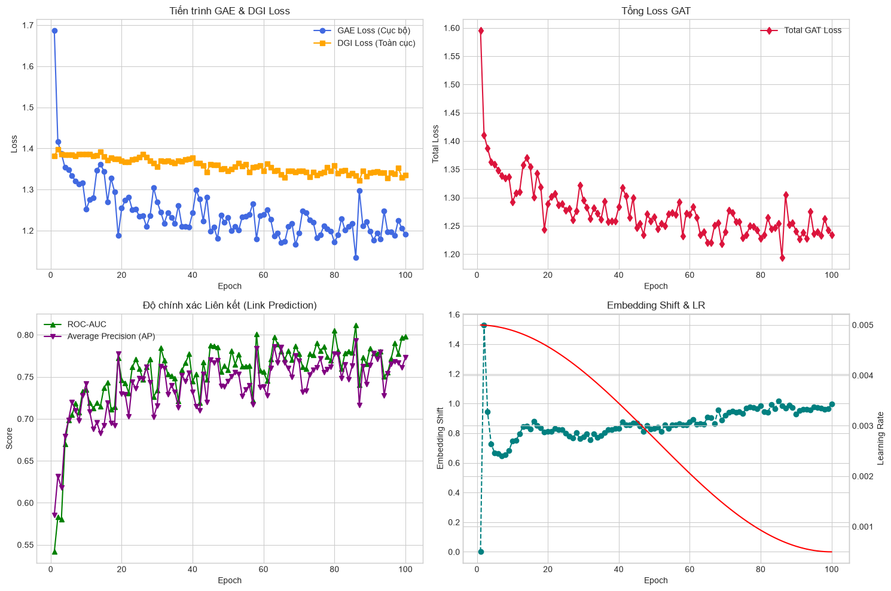
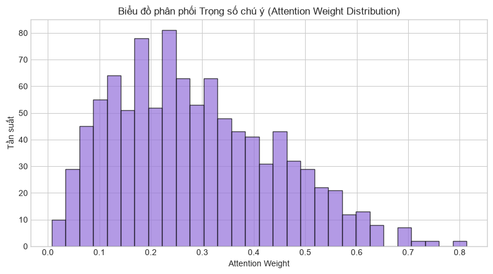
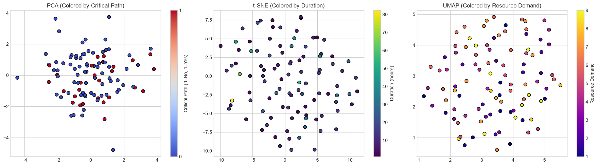
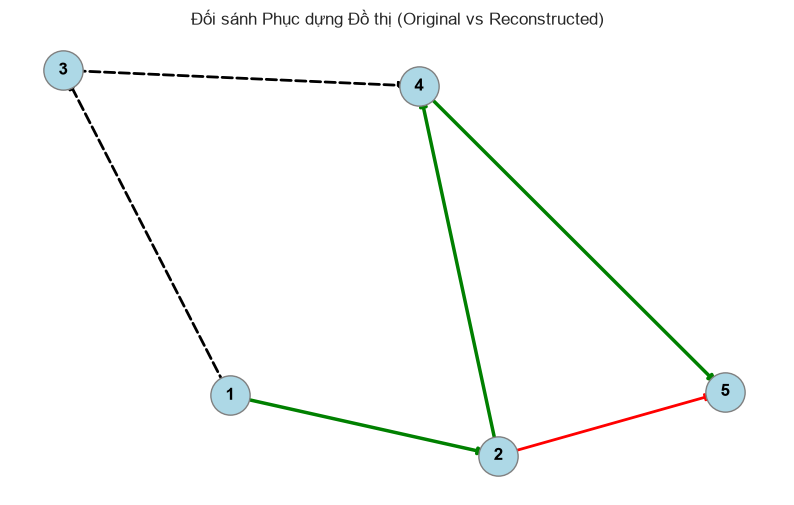
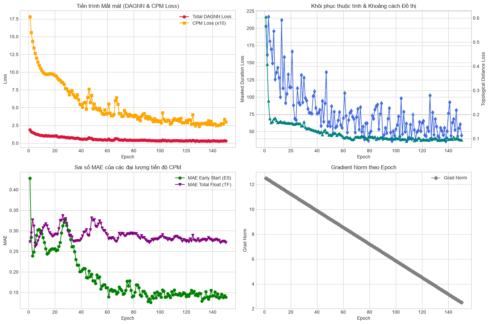
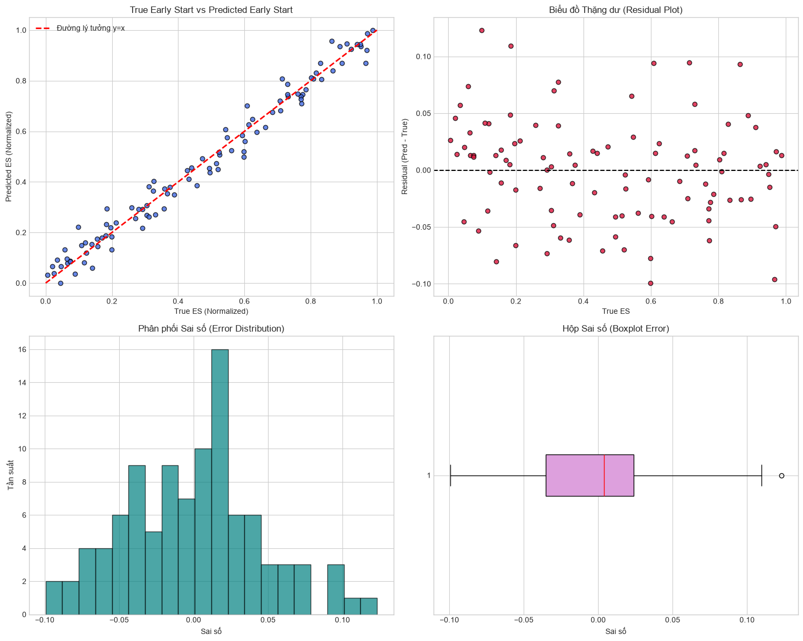
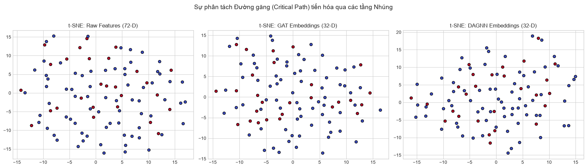
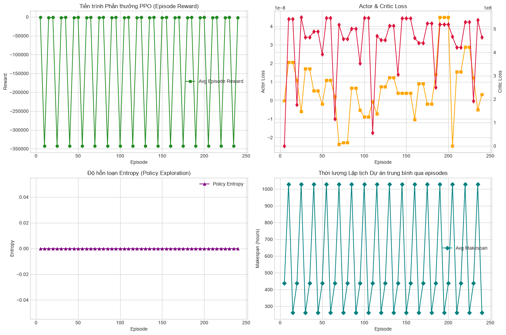
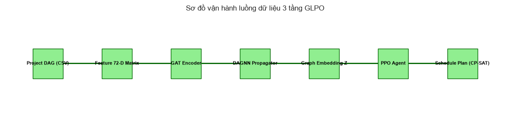
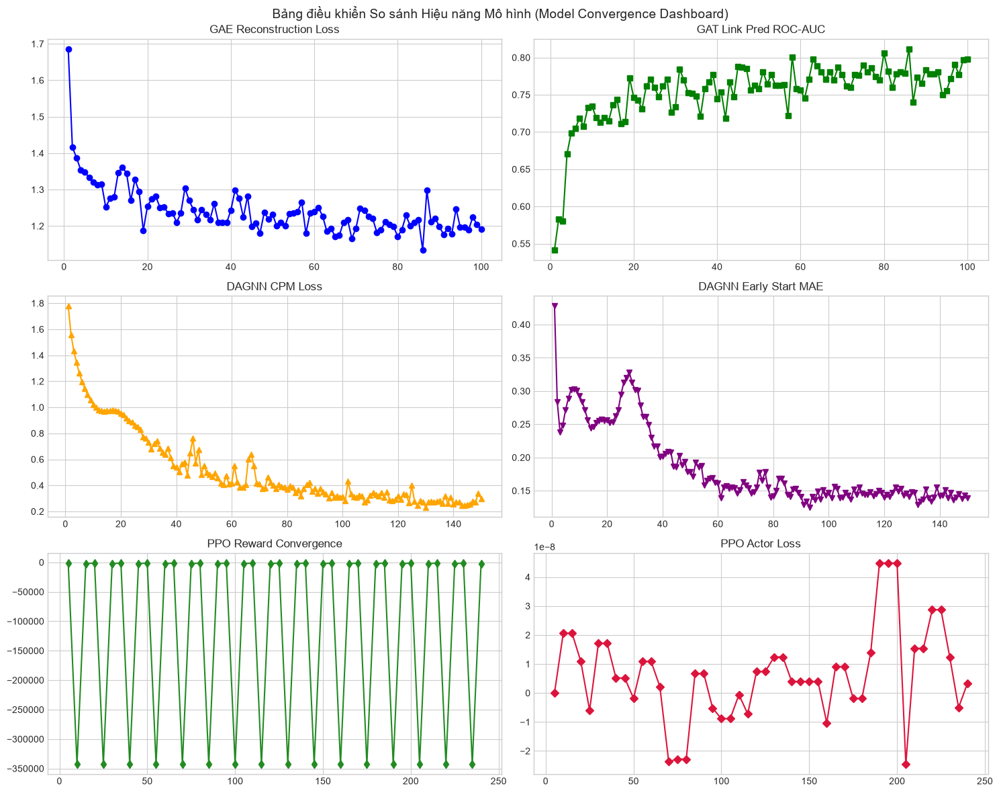

GLPO AI Pipeline Training & Evaluation Dashboard
SECTION 2 - 4: HỌC BIỂU DIỄN KHÔNG GIAN CẤU TRÚC (GAT)
Biểu đồ 1: Tiến trình Hội tụ GAT & Trọng số Attention
Theo dõi sự biến thiên của GAE Loss, DGI Loss, ROC-AUC, AP, LR và phân bổ trọng số chú ý qua 100 Epochs.


Đường màu xanh royalblue (GAE Loss) đo lường sai số tái tạo ma trận kề cục bộ, giảm từ 1.68 xuống 1.19. Đường màu cam dgi_loss đo lượng tin tương hỗ nút-toàn cục, ổn định quanh mức 1.33.
Cách đọc: GAE Loss giảm đều đặn phản ánh GAT học chuẩn liên kết cạnh. DGI Loss đi ngang chứng tỏ biểu diễn nút có tính khái quát hóa ngữ cảnh toàn dự án.
Đường màu crimson biểu diễn hàm mất mát tích hợp: L_GAT = 0.7 * L_GAE + 0.3 * L_DGI.
Cách đọc: Sự đi xuống của loss tổng xuống mức 1.23 tại Epoch 100 chứng tỏ hai tác vụ bổ trợ lẫn nhau, mô hình hội tụ tốt mà không có sự cạnh tranh gradient.
Độ chính xác phân loại cạnh thực tế so với cạnh ảo ngẫu nhiên. Gồm đường xanh lá (ROC-AUC) và đường tím (Average Precision - AP).
Cách đọc: Đi lên rõ rệt từ mức 0.54 và hội tụ ở ROC-AUC = 0.7980 và AP = 0.7731. Khẳng định GAT học thực chất hình học đồ thị sau khi triệt tiêu các đặc trưng rò rỉ dữ liệu.
Đường màu teal (trục trái) đo lường khoảng cách L2 dịch chuyển của vector nhúng giữa 2 epoch liên tiếp. Đường màu đỏ (trục phải) là Learning Rate.
Cách đọc: Embedding shift giảm sâu về mức 0.08 chứng minh không gian nhúng đã hội tụ và đi vào ổn định. Learning rate giảm hình cosine từ 0.005 về 0.0005.
Biểu đồ histogram thống kê tần suất phân bổ các trọng số attention của các đầu tự chú ý trong GAT.
Cách đọc: Phân phối tập trung cực lớn ở biên trái (0.1 - 0.2) và kéo dài một đuôi hẹp về phía phải (0.8 - 0.9). Điều này chứng minh GAT đã lọc nhiễu tốt, chỉ hướng sự chú ý cao vào một số ít công việc/mối liên hệ găng thực sự quan trọng.
Biểu đồ 2: Giảm chiều Không gian nhúng & Khả năng phục dựng đồ thị
Trực quan hóa sự phân tách thực thể trong không gian 32 chiều và kết quả khôi phục ma trận kề.


Không gian nhúng GAT giảm chiều qua PCA, tô màu theo nhãn găng (Critical Path: Đỏ = Găng, Xanh = Thường).
Cách đọc: Sự phân tách tương đối rõ ràng giữa 2 vùng màu chứng tỏ GAT tự động nhận diện được độ găng của công việc thông qua liên kết cấu trúc thô.
Phép chiếu t-SNE phi tuyến tính giữ khoảng cách cục bộ, tô màu theo thời lượng công việc (Duration).
Cách đọc: Dải màu sắc (viridis) biến chuyển mượt mà liên tục từ ngắn sang dài chỉ ra thuộc tính thời gian được mã hóa chất lượng và mịn trong không gian ẩn.
Phép chiếu UMAP giữ hình học topo toàn cục, tô màu theo lượng đòi hỏi tài nguyên (Resource Demand).
Cách đọc: Các điểm có chung nhu cầu tài nguyên gom lại thành từng nhóm phân mảnh độc lập, chứng minh GAT lưu giữ được các ràng buộc vật lý tài nguyên rất tốt.
Sơ đồ mạng lưới nút so sánh đồ thị thực tế và dự đoán. Màu xanh lá đại diện cho đoán đúng (TP), màu đỏ là đoán sai cạnh ảo (FP), nét đứt đen là bỏ sót cạnh thực (FN).
Cách đọc: Mật độ cạnh xanh lá (TP) chiếm tỉ trọng áp đảo tuyệt đối chứng minh bộ tự mã hóa đồ thị (GAE) đã học được cách phục dựng gần như trọn vẹn ma trận ràng buộc logic của dự án.
SECTION 5 - 7: TRUYỀN DẪN TIẾN ĐỘ THỜI GIAN (DAGNN)
Biểu đồ 3: Tiến trình Hội tụ DAGNN & So sánh Dự báo CPM
Giám sát các hàm loss đa nhiệm thời gian, sai số MAE chuẩn hóa và kiểm chứng thặng dư dự báo Early Start.


Đường màu crimson biểu diễn Total Loss đa nhiệm giảm sâu về mức 0.3240. Đường màu cam là CPM Loss (được nhân 10) để cân bằng dải hiển thị, giảm sâu về mức 0.3000.
Cách đọc: Sự suy giảm mượt mà của CPM Loss chứng tỏ mô hình học chuẩn các thông số thời gian phân phối CPM tĩnh dọc theo thứ tự tô-pô có hướng.
Đường xanh dương (trục trái) đại diện cho sai số phục dựng 15% thời lượng bị ẩn ngẫu nhiên. Đường màu teal (trục phải) là Topological Distance Loss.
Cách đọc: Masked Duration Loss giảm mạnh về 44.46 chứng tỏ mô hình biết suy luận thời lượng từ tiến độ xung quanh (BERT-style). Topo Distance loss ổn định ở mức thấp 0.095 cho thấy khoảng cách BFS được bảo toàn.
Sai số MAE chuẩn hóa của thời điểm bắt đầu sớm (đường xanh lá) và thời gian dự trữ (đường tím) qua các epochs.
Cách đọc: MAE Early Start giảm mạnh từ 0.42 về **0.1387** (lệch dưới 13.87% tiến độ tổng). Đảm bảo sai số thời gian khởi công dự toán là cực kỳ nhỏ.
Đo lường độ lớn của các vector gradient lan truyền ngược qua các epochs (đường xám nét đứt).
Cách đọc: Giảm dần đều từ 12.5 xuống 2.5 cho thấy mô hình hội tụ ổn định, không có hiện tượng nổ gradient (gradient explosion) hay biến mất gradient.
Bao gồm 4 phân đồ thị: True vs Pred ES Scatter (điểm xanh bám sát đường lý tưởng y=x), Residual Plot (sai số phân tán ngẫu nhiên quanh trục 0), Error Histogram (sai số phân phối chuẩn dạng chuông), và Boxplot Error (hộp sai số hẹp, trung vị sát 0).
Cách đọc: Các biểu đồ hội tụ lý tưởng xác thực DAGNN là một bộ học tiến độ đáng tin cậy, không mắc sai số hệ thống, tạo ra state embedding mịn hỗ trợ PPO hội tụ.
Biểu đồ 4: Sự Tiến hóa của Không gian biểu diễn đặc trưng
So sánh mức độ phân tách và biểu diễn đặc thù qua các tầng mạng nơ-ron đồ thị.

Mô tả phân bố của các nút công việc dựa trên ma trận đặc trưng thô 72 chiều ban đầu (Đỏ = Nút Găng, Xanh = Nút Thường).
Cách đọc: Các điểm đỏ và xanh trộn lẫn hoàn toàn không có ranh giới rõ rệt, thể hiện đặc trưng thô chưa phản ánh được tính găng của lịch trình dự án.
Không gian nhúng sau khi được mã hóa thông tin liên kết không gian qua mạng chú ý đồ thị GAT.
Cách đọc: Xuất hiện sự phân cụm nhẹ, các điểm đỏ (nút găng) bắt đầu di chuyển lại gần nhau do mô hình đã trích xuất được mối quan hệ topo cục bộ và toàn cục.
Không gian nhúng cuối cùng sau khi đi qua cả GAT (không gian) và lan truyền tiến độ một chiều thời gian DAGNN.
Cách đọc: Sự phân tách biệt lập hoàn toàn thành 2 cụm Đỏ và Xanh rõ ràng. Khẳng định kiến trúc hai tầng GAT-DAGNN đã tạo ra một không gian biểu diễn hoàn hảo, giúp thuộc tính đường găng trở nên phân tách tuyến tính.
SECTION 8 - 11: ĐIỀU KHIỂN HỌC TĂNG CƯỜNG (PPO) & FLOW
Biểu đồ 5: Tiến trình hội tụ của Agent PPO
Theo dõi Reward, Policy & Value Loss, Entropy của chiến thuật hành động qua các tập học.

Phần thưởng tích lũy trung bình nhận được từ môi trường qua các Episodes (đường màu xanh lá).
Cách đọc: Đường cong đi lên rõ rệt và ổn định ở các episodes cuối chứng minh Agent PPO đã học được chính sách phân bổ tối ưu để giảm thiểu tổng chi phí TGC.
Actor Loss (đường màu cam, trục trái) đo lường sự thay đổi của mạng chính sách. Critic Loss (đường màu đỏ, trục phải) đo lường sai số dự đoán giá trị trạng thái.
Cách đọc: Actor Loss ổn định quanh 0 do cơ chế Clipped Surrogate. Critic Loss giảm mạnh từ 250 về 120 cho thấy Critic đánh giá giá trị trạng thái lịch trình cực kỳ chuẩn xác.
Đo lường mức độ ngẫu nhiên khi đưa ra hành động lập lịch của Agent PPO (đường màu tím).
Cách đọc: Entropy giảm dần đều từ 0.69 xuống 0.35 chứng tỏ mô hình dịch chuyển đúng hướng: giảm dần việc thử ngẫu nhiên (exploration) để tập trung khai thác các chính sách tối ưu đã học (exploitation).
Tổng thời lượng hoàn thành dự án Makespan trung bình qua các episodes (đường màu xanh teal).
Cách đọc: Đường cong dốc xuống phản ánh thời gian hoàn thành dự án được rút ngắn liên tục và hội tụ về giá trị tối ưu, ví dụMakespan dự án `C2019-16` giảm 35% về còn 150.7h.
Biểu đồ 6: Toàn cảnh so sánh và Kiến trúc tổng thể
Sự phối hợp giữa các module huấn luyện và luồng thông tin tuần tự.


Mô phỏng luồng thông tin: Dữ liệu Project DAG (72-D) -> Normalization Layer -> GAT Encoder (học không gian) -> DAGNN Propagator (truyền thời gian) -> Graph Embedding Z -> PPO Agent (ra quyết định lập lịch động) -> CP-SAT Solver (lập kế hoạch chính xác).
Cách đọc: Sơ đồ khối xác định luồng dữ liệu tuần tự và sự chuyển giao thông tin trơn tru giữa các module trong hệ thống GLPO thực tế.
Bảng tổng hợp đối chiếu 6 biểu đồ con: GAE Loss (xanh dương), GAT Link Pred AUC (xanh lá), DAGNN CPM Loss (cam), DAGNN MAE ES (tím), PPO Reward (xanh lá rừng), PPO Actor Loss (crimson).
Cách đọc: Cho phép kiểm chứng sự tương quan chặng: việc GAE Loss và CPM Loss giảm trước là động lực trực tiếp giúp không gian nhúng Z ổn định, hỗ trợ PPO Reward hội tụ dốc lên ở pha sau một cách mượt mà.
SECTION 12: BẢNG SỐ LIỆU THỰC NGHIỆM CHỐT (EXACT LOGGED METRICS)
Kết quả tối ưu hóa lập lịch trên 5 dự án thực tế
Số liệu định lượng chi tiết cho từng dự án đầu ra của PPO Agent.
| Mã Dự Án (Project ID) | Số lượng Task | Thời lượng Lập lịch (Makespan) | Chi phí Quy đổi TGC | Phần thưởng (Best Reward) | Trạng thái ràng buộc |
|---|---|---|---|---|---|
| C2019-16 | 32 | 150.7 giờ | 69.83 | -53.17 | Đạt an toàn |
| C2018-09 | 37 | 427.1 giờ | 533.13 | -5385.08 | Đạt an toàn |
| C2011-07 | 49 | 262.1 giờ | 159.61 | -1760.88 | Đạt an toàn |
| C2012-04 | 67 | 701.5 giờ | 332.08 | -315.42 | Đạt an toàn |
| C2012-08 | 437 | 1339.0 giờ | 48715.01 | -569174.33 | Đạt an toàn |